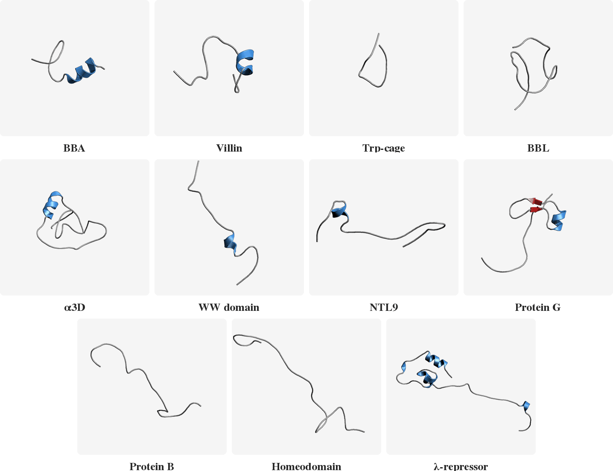
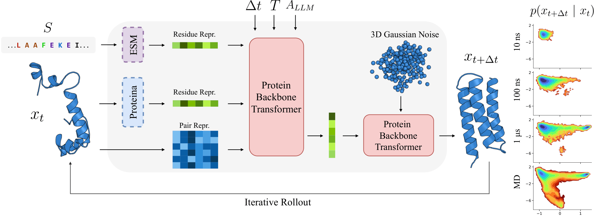
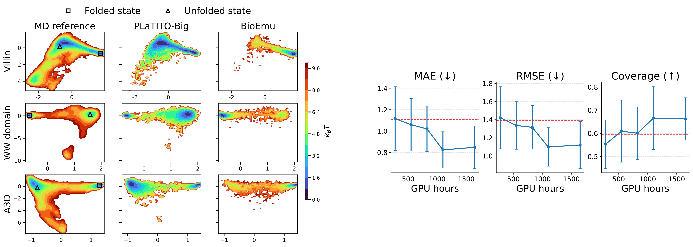
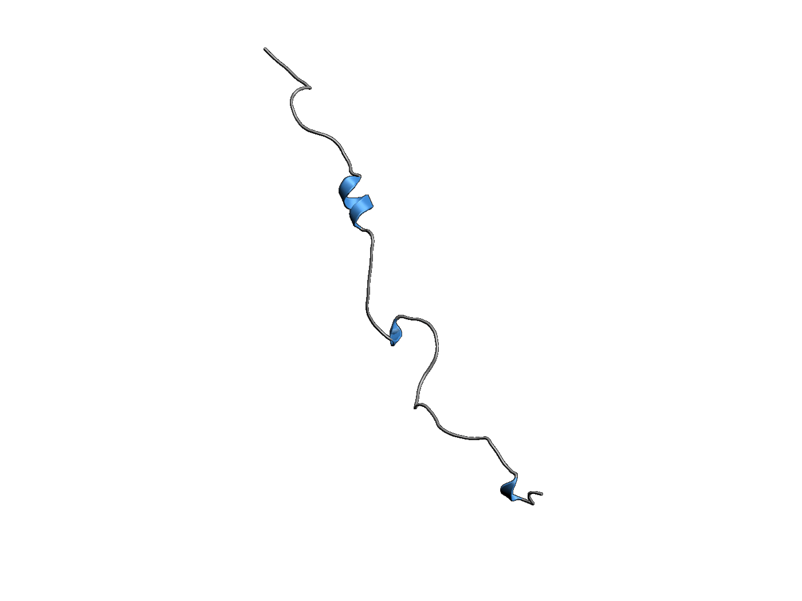

Abstract
Molecular dynamics (MD) is a central computational tool in physics, chemistry, and biology, enabling quantitative prediction of experimental observables as expectations over high-dimensional molecular distributions such as Boltzmann distributions and transition densities. However, conventional MD is fundamentally limited by the high computational cost required to generate independent samples. Generative molecular dynamics (GenMD) has recently emerged as an alternative, learning surrogates of molecular distributions either from data or through interaction with energy models. While these methods enable efficient sampling, their transferability across molecular systems is often limited. In this work, we show that incorporating auxiliary sources of information can improve the data efficiency and generalization of transferable implicit transfer operators (TITO) for molecular dynamics. We find that coarse-grained TITO models are substantially more data-efficient than Boltzmann Emulators, and that incorporating protein language model (pLM) embeddings further improves out-of-distribution generalization. Our approach, PLaTITO, achieves state-of-the-art performance on equilibrium sampling benchmarks for out-of-distribution protein systems, including fast-folding proteins. We further study the impact of additional conditioning signals such as structural embeddings, temperature, and large-language-model-derived embeddings on model performance.
PLaTITO reproduces folding transition kinetics in unseen settings
Starting from unfolded states, PLaTITO generates long time-scale trajectories for the fast-folding proteins, successfully capturing their folding transition kinetics.

Model Overview

Results
| Model | MAE (↓) | RMSE (↓) | Coverage (↑) | GPU Hours | MD Data | Parameters |
|---|---|---|---|---|---|---|
| TITO-3M | 1.068 ± 0.272 | 1.382 ± 0.302 | 0.590 ± 0.111 | 1100 | 56 ms | 3M |
| PLaTITO-3M | 0.949 ± 0.269 | 1.228 ± 0.328 | 0.651 ± 0.151 | 1100 | 56 ms | 3M |
| PLaTITO-19M | 0.824 ± 0.170 | 1.099 ± 0.212 | 0.666 ± 0.136 | 1100 | 56 ms | 19M |
| BioEmu † | 1.110 ± 0.292 | 1.389 ± 0.346 | 0.594 ± 0.175 | 9216 | 216 ms | 31M |
† BioEmu was additionally trained on 131k AFDB structures and 502k experimental ΔG measurements.

Left. Free energy landscapes of three fast-folding proteins (Villin, WW domain, A3D) in TICA space. PLaTITO-19M (middle) accurately reproduces MD reference distributions (left) and outperforms BioEmu (right).
Right. Scalability with training compute. Performance improves with compute and converges at ~1,100 GPU hours, substantially less than BioEmu's 9,216 GPU hours.
Pre-trained Models
All model checkpoints are available on HuggingFace.
| Model | Checkpoint | ESM backbone |
|---|---|---|
| TITO-3M | tito_3M.ckpt |
— |
| PLaTITO-3M | platito_3M.ckpt |
ESMC 300M |
| PLaTITO-19M | platito_19M.ckpt |
ESMC 6B |
| PLaTITO-36M | platito_36M.ckpt |
ESMC 6B |
PLaTITO folds a millisecond-folding protein
Starting from a completely extended chain, PLaTITO successfully simulates the folding of ubiquitin into its native topology. Due to its slow folding rate, this transition could not be observed in the past by conventional MD simulations, illustrating the power of PLaTITO.

BibTeX
@article{antoniadis2026platito,
title = {Protein Language Model Embeddings Improve Generalization of Implicit Transfer Operators},
author = {Antoniadis, Panagiotis and Pavesi, Beatrice and Olsson, Simon and Winther, Ole},
journal = {arXiv e-prints},
year = {2026}
}